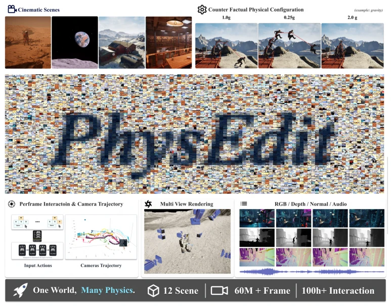
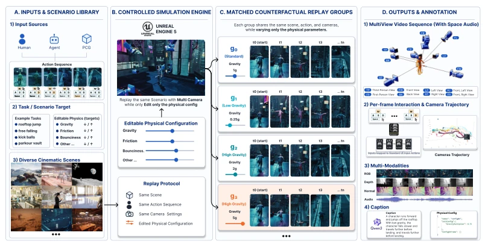
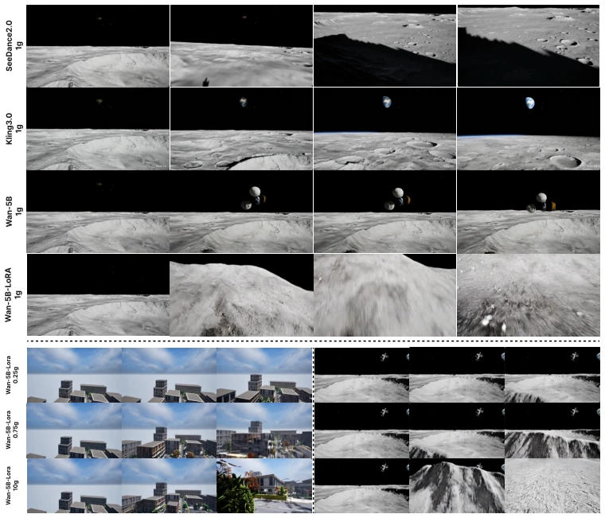
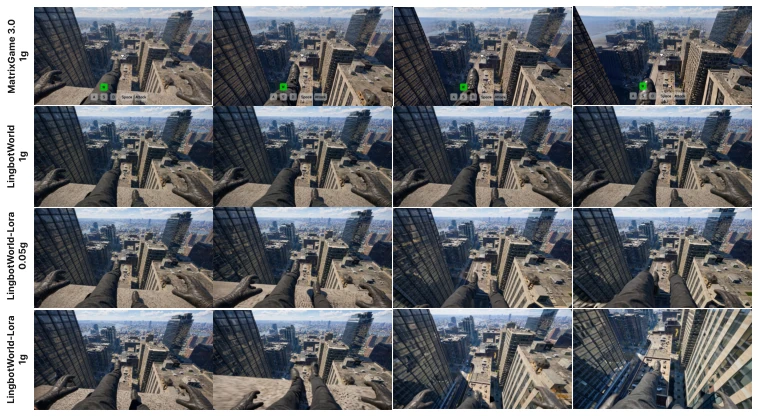
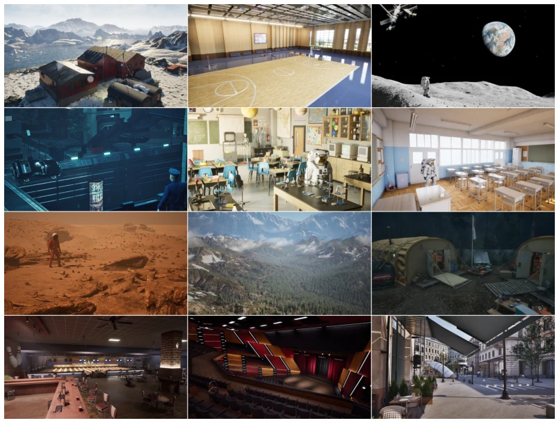
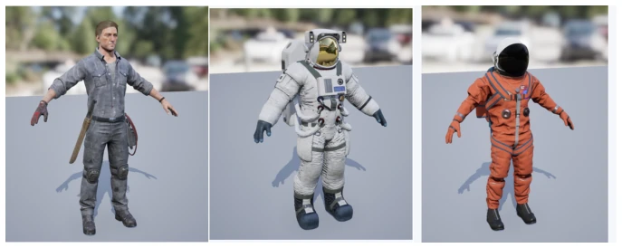
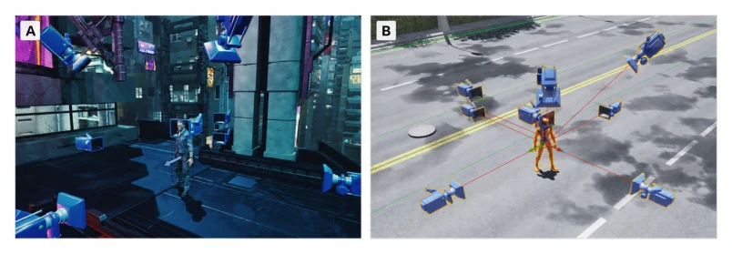
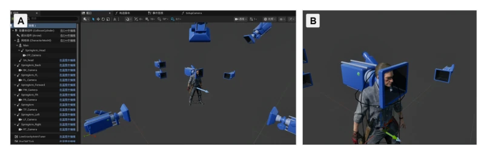
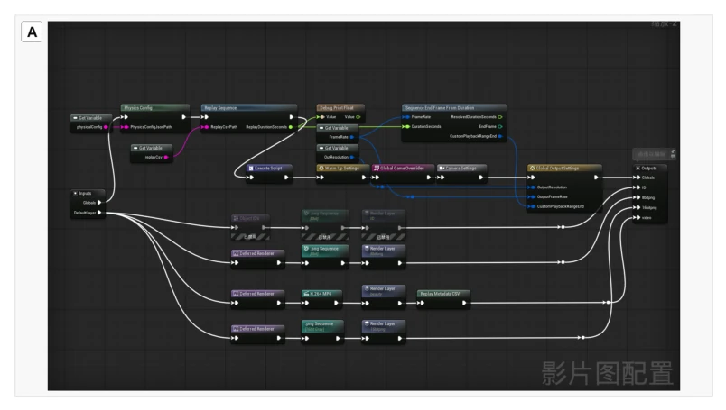
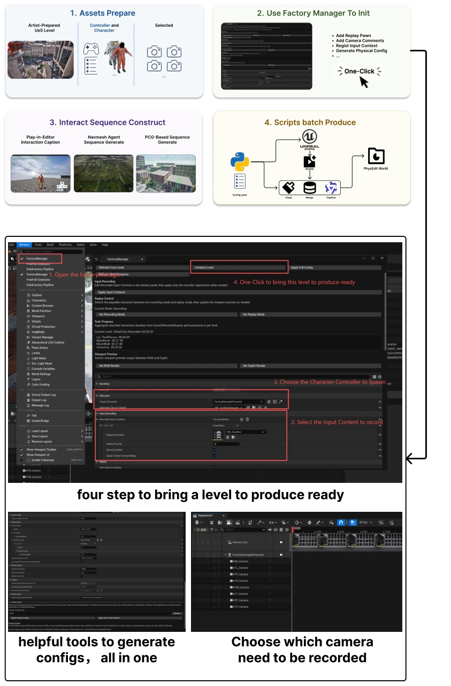

PhysEditWorld executes this task quite solidly, directly extracting physical rules from the "black box" to manipulate as variables. Current game world models, such as Genie [1] or GameNGen [3], while video generation appears quite convincing, learn physical laws entirely implicitly; wishing to modify gravity? Absolutely not. This dataset is designed to treat this "physical amnesia". 60 million frames, UE5 rendering, RGB, depth, and normals all provided, appearing quite comprehensive. However, there are also drawbacks; currently only gravity is modified, friction, drag, etc., are not yet included, representing a "single-point breakthrough". Models tuned with LoRA can indeed comprehend gravity instructions, otherwise they are merely guessing, but is this UE5 dependency somewhat heavy? After all, not all research teams can afford the engine. Overall, it serves as adding a brick to the "physical common sense" of embodied intelligence, although the building is not yet completed, at least we know where to build.
Existing game world models mostly stop at visual realism, lacking explicit control capabilities over physical rules. Systems such as Genie [1] and GameNGen [3], although capable of synthesizing plausible game trajectories, learn physical dynamics as implicit regularization of the data distribution and cannot answer the core question of "how the scene should evolve if physical rules are edited". Existing datasets such as Sekai [12] or MineRL [10] either lack interactive actions or have fixed physical rules, failing to provide matched physical intervention comparisons. PhysEditWorld aims to address this gap by treating physical parameters (such as gravity) as editable design variables rather than implicit constants. This is crucial for game developers and embodied AI research, as developers need to explicitly adjust physical parameters to shape rhythm and difficulty, whereas current models cannot support this controllability, resulting in generated videos that are aesthetically pleasing but lack "physical logic".

Figure 1: Overview of PhysEditWorld. The dataset contains 12 cinematic UE5 scenes, 100+ hours of gameplay interactions, and 60M+ rendered rollout frames. Recorded interactions are replayed under editable physical configurations and rendered from 8 synchronized camera views, with RGB, depth, normal, audio, action, camera, engine-state, and gravity annotations.
The core is UE5's Replay-and-Rendering Pipeline. The overall process is divided into scene construction, controlled simulation, matched replay extension, and synchronous export. First, based on the UE5 engine, 12 cinematic scenes are constructed, registering scenes, assets, and camera anchors. Second, through the DataFactory plugin, normalized action sequences are injected into the native UE5 game loop, but the physics configuration is edited as explicit parameters. The key lies in the "Matched Replay Group": fixing scene A, action S, controller M, and camera policy pi_c, only changing the physics configuration theta (such as gravity). The differences produced in this way can be attributed to physics editing. Finally, multi-view videos, depth, normals, audio, and engine logs are synchronously exported via Movie Render Queue, and semantic caption is generated using Qwen3-VL. This design ensures that the physics variable is the sole control variable, enabling the model to explicitly learn the causal relationship between physical parameters and dynamic changes during training, rather than confusing scene content or action intent.

Figure 2: Overview of the PhysEditWorld data pipeline. A) Input sources and scenario library provide human-controlled, agent-generated, or scripted action sequences in diverse cinematic UE5 scenes. B) A controlled UE5 simulation engine replays the same scenario while editing only the physical configuration. C) Matched replay groups share the same scene, action sequence, character controller, and camera policy while varying gravity. D) The pipeline exports synchronized multi-view videos, spatial audio, per-frame interaction and camera trajectories, multimodal render passes, captions, and physical annotations.
Experiments verified the utility of the dataset in generation and reasoning tasks. In gravity-conditioned video generation, Wan2.2 [77], Kling 3.0, and SeeDance 2.0 were compared. Zero-shot models were insensitive to gravity, with the Align metric at only 33.3%, whereas after LoRA fine-tuning, Align reached 100%, and the acceleration proxy metric increased monotonically. In action-conditioned first-person world models, LingBotWorld [5] after fine-tuning could generate gravity-dependent falling motion, while Matrix-Game 3.0 [6] zero-shot got stuck at the platform edge. On VLM tasks, Qwen3-VL [76] after fine-tuning improved gravity classification accuracy from 24.71% to 95.29%. The results indicate that the matched physical intervention data provided by PhysEditWorld can effectively improve the model's perception and generation capabilities regarding physical dynamics, revealing the lack of physical consistency in current models.

Figure 3: Qualitative results under a free-fall prompt. Top: SeeDance2.0, Kling3.0, Wan2.2-TI2V-5B, and +PhysEditWorld LoRA at 1g; baselines remain near-static while the LoRA model generates strong self-motion with motion blur. Bottom: +PhysEditWorld LoRA at 0.25×/0.75×/10× gravity; descent speed scales monotonically, confirming continuously controllable gravity.

Figure 4: First-person world-model case study. First frame is generated by GPT-Image2. Baseline models (Matrix-Game 3.0, zero-shot LingBotWorld) remain near the platform edge and never enter free-fall under a 1g prompt. After PhysEditWorld LoRA-128 tuning, LingBotWorld generates platform departure and gravity-dependent downward self-motion.
其他图片Other Figures

Figure 5: The 12 curated UE5 scene assets used in PhysEditWorld. The asset library covers indoor, outdoor, planetary, urban, sports, and object-interaction environments to support diverse gravity- sensitive motion patterns.

Figure 6: Character assets used in the current PhysEditWorld pipeline. Characters are configured with compatible controllers, animation retargeting, and low-gravity animation tuning to support reproducible replay under edited gravity settings.

Figure 7: Character-centric multi-camera rig used for synchronized capture. (A) Cameras are embedded around the actor inside a UE5 scene. (B) The rig defines multiple named views around the same character reference frame, including first-person, third-person, side, front, and back views.

Figure 8: Socket and spring-arm based camera setup. (A) The character blueprint contains multiple spring-arm and camera components attached around the skeletal mesh. (B) Close-range cameras are mounted through skeletal sockets and spring arms, allowing first-person or near-body views to inherit character motion while preserving controllable camera offsets.

Figure 9: Movie Render Graph configuration for synchronized multimodal export. The graph combines replay sequence loading, warm-up, global game and camera settings, output settings, multi-branch visual exports, H.264 preview video, high-precision depth output, and replay metadata CSV export.

Figure 10: UE Editor Plugin and Data Generation Workflow